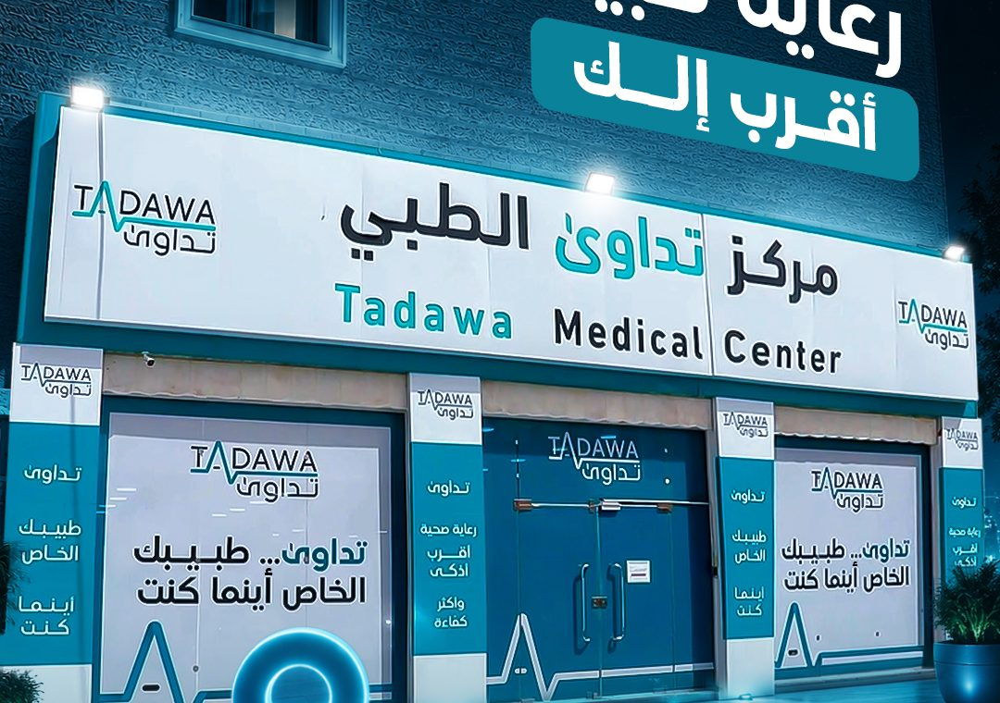
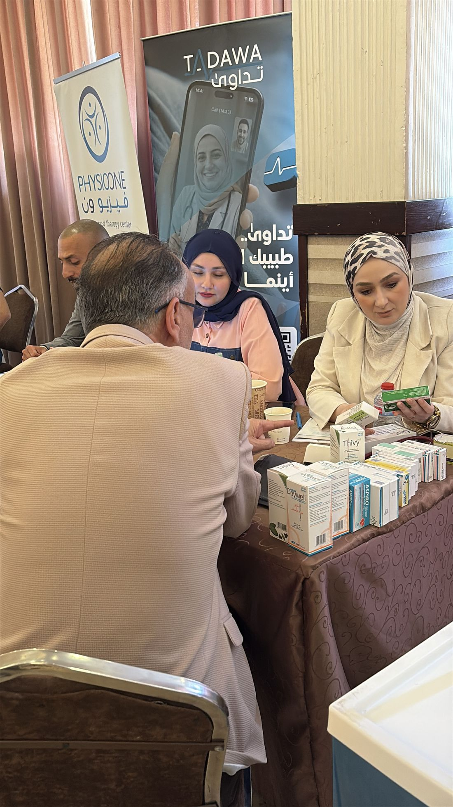
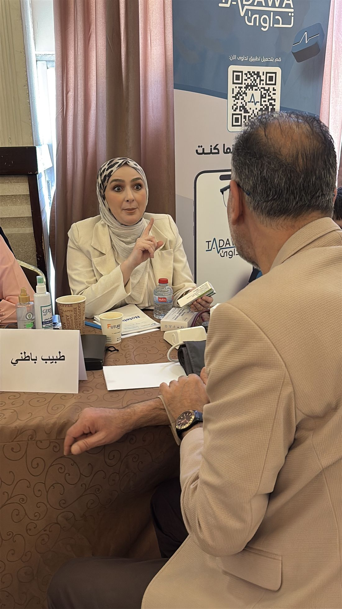

About Tadawaعن تداوىٰ
Redefining the healthcare journey.نعيد رسم رحلة الرعاية الصحية
Founded in 2022, Tadawa is a Jordanian medical IT company specialising in telemedicine and primary healthcare. We give every patient a family doctor as their first point of contact, 24/7, through our app or in our clinics. We believe high-quality care should be seamless for patients and highly efficient for health networks, bridging patient well-being and measurable B2B value.تأسست تداوىٰ عام 2022، وهي شركة أردنية رائدة في مجال حلول تكنولوجيا المعلومات الطبية، تتخصص في تقديم خدمات الطبابة عن بعد والرعاية الصحية الأولية. نمنح كل مريض طبيب أسرة كنقطة اتصال أولى، على مدار الساعة، عبر تطبيقنا أو في عياداتنا. نؤمن بأن الرعاية عالية الجودة يجب أن تكون سلسة للمرضى وفعّالة للغاية للشبكات الصحية، بما يجمع بين مصلحة المريض والقيمة التجارية الملموسة.
Our visionرؤيتنا
Quality care for everyone, wherever they are.رعاية عالية الجودة للجميع، أينما كانوا
Far beyond a telemedicine app, we are building the digital front door to healthcare across the Middle East, so every journey begins with a structured, effective primary-care interaction.أبعد من مجرد تطبيق للطبابة عن بعد، نبني البوابة الرقمية الأولى للرعاية الصحية في الشرق الأوسط، لتبدأ كل رحلة بتفاعل منظم وفعّال مع الرعاية الأولية.
Our missionرسالتنا
Empower patients to take control of their health, with innovation, compassion and collaboration.تمكين المرضى من إدارة صحتهم، عبر الابتكار والتعاطف والتعاون.
Accessibility · Efficiency · Connected careسهولة الوصول · الكفاءة · الرعاية المترابطة
One entry point replaces a fragmented, confusing journey. Patients are guided to the right level of care from the very first interaction.نقطة دخول واحدة تحلّ محل رحلة مجزّأة ومربكة. يُوجَّه المرضى إلى مستوى الرعاية المناسب من أول تفاعل.
A regional standardمعيار إقليمي
Setting a new standard for the future of primary healthcare across the region, starting from Jordan.نضع معياراً جديداً لمستقبل الرعاية الأولية في المنطقة، انطلاقاً من الأردن.
The power of primary care · our core thesisقوة الرعاية الأولية · أطروحتنا الأساسية
Modern healthcare was not designed around patients.لم تُصمَّم الرعاية الصحية الحديثة حول المريض
It was built around hospitals, doctors and the insurance system. Millions of patients enter the system through the wrong door, bypassing primary care to visit specialists directly. The result: higher costs for payers, fragmented care for patients, poorer outcomes for everyone.بل بُنيت حول المستشفيات والأطباء ونظام التأمين. يدخل ملايين المرضى إلى النظام من الباب الخطأ، متجاوزين الرعاية الأولية إلى الاختصاصيين مباشرة. والنتيجة: كلفة أعلى على الجهات الدافعة، ورعاية مجزّأة للمرضى، ونتائج أسوأ للجميع.
Empowering family physicians to own this volume reshapes the cost structure of care. That is what makes the Tadawa ecosystem viable and scalable.تمكين أطباء الأسرة من إدارة هذا الحجم يعيد تشكيل هيكل كلفة الرعاية. وهذا ما يجعل منظومة تداوىٰ قابلة للاستمرار والتوسع.
The Tadawa platformمنصة تداوىٰ
A complete primary-care ecosystem, not a standalone app.منظومة رعاية أولية متكاملة… لا مجرد تطبيق
Core digital ecosystemالمنظومة الرقمية الأساسية
A dedicated physician network, proprietary technology, seamless insurance integration and unified medical records.شبكة أطباء مخصصة، تقنية خاصة، تكامل سلس مع التأمين، وسجلات طبية موحّدة.
Care network & solutionsشبكة الرعاية والحلول
A structured referral network, our own physical clinics, expanding partner clinics and corporate healthcare.شبكة تحويل منظمة، عياداتنا الخاصة، عيادات شريكة متوسعة، ورعاية صحية للشركات.
Analytics & future AIالتحليلات والذكاء الاصطناعي
Deep analytics driving data-informed clinical decisions, with planned AI to elevate diagnostic and operational performance.تحليلات عميقة تدعم القرارات السريرية المبنية على البيانات، مع ذكاء اصطناعي مخطط لرفع الأداء التشخيصي والتشغيلي.
Locations & expansionمواقعنا وخطط التوسع
An integrated network across Jordan, then the region.شبكة متكاملة في الأردن… ثم المنطقة
Today Tadawa runs a dedicated primary-care clinic in Amman, a top-tier medical center in Tafileh and a partner clinic in Irbid, with telemedicine covering the whole country.تدير تداوىٰ اليوم عيادة رعاية أولية مخصصة في عمّان، ومركزاً طبياً متميزاً في الطفيلة، وعيادة شريكة في إربد، مع طبابة عن بعد تغطي البلاد كلها.

- 2022Founded in Ammanالتأسيس في عمّان
Tadawa Healthcare L.L.C. starts as a medical IT company with a telemedicine app and family-doctor service.
تنطلق شركة تداوىٰ للرعاية الصحية كشركة تكنولوجيا طبية بتطبيق للطبابة عن بعد وخدمة طبيب الأسرة.
- AmmanDedicated primary-care clinicعيادة رعاية أولية مخصصة
Ibn Khaldoun St. No. 19, Maggie Medical Complex. The home of Tadawa's family doctors and head office.
شارع ابن خلدون رقم 19، مجمع ماجي الطبي. مقر أطباء الأسرة والمكتب الرئيسي.
- TafilehTadawa Medical Centerمركز تداوىٰ الطبي
A top-tier medical center open from 8:00 to midnight, every day, with visiting specialists.
مركز طبي متميز مفتوح من 8 صباحاً حتى منتصف الليل يومياً، مع اختصاصيين زائرين.
- IrbidPartner clinicعيادة شريكة
In partnership with Nabd Al-Amal Medical Clinics.
بالتعاون مع عيادات نبض الأمل الطبية.
- NextالتاليAqaba, then Karakالعقبة، ثم الكرك
Our next physical and digital launches, followed by Ma'an, Zarqa and the rest of Jordan: one integrated network nationwide.
إطلاقاتنا الميدانية والرقمية القادمة، تليها معان والزرقاء وبقية الأردن: شبكة متكاملة واحدة على مستوى المملكة.
- Roadmapخارطة الطريقSaudi Arabia and the GCCالسعودية ودول الخليج
Jordan leadership first, then a Saudi launch, insurance and corporate offerings, AI assistance, and a regional primary healthcare network.
الريادة في الأردن أولاً، ثم الإطلاق في السعودية، وعروض التأمين والشركات، ومساعدة الذكاء الاصطناعي، وشبكة رعاية أولية إقليمية.
In the communityفي المجتمع
Free medical days, awareness and partnerships.أيام طبية مجانية وتوعية وشراكات
Our doctors take part in free medical days with universities, professional associations and employers across Jordan, from the German Jordanian University and the Engineers Association in Amman to community events in Tafileh.يشارك أطباؤنا في أيام طبية مجانية مع الجامعات والنقابات المهنية وأصحاب العمل في أنحاء الأردن، من الجامعة الألمانية الأردنية ونقابة المهندسين في عمّان إلى فعاليات المجتمع في الطفيلة.


Investorsالمستثمرون
Join us in building the region's healthcare operating system.شاركنا بناء نظام تشغيل الرعاية الصحية في المنطقة
Tadawa combines proven market traction with a business model that lowers insurer loss ratios and earns recurring revenue. Capital is deployed across technology, regional expansion, sales, operations and working capital.تجمع تداوىٰ بين جذب سوقي مثبت ونموذج عمل يخفّض نسب خسارة شركات التأمين ويحقق إيرادات متكررة. يُوظَّف رأس المال في التكنولوجيا والتوسع الإقليمي والمبيعات والعمليات ورأس المال العامل.
Request the investor deckاطلب عرض المستثمرين